- About
- Diary
- People
- Events
- Reading
- Writing
- Meals
- Meetings
- Search

1800. Jan. 1. W.S Elwes & F Jas Wt n calls: West End, w. Chandler: dine at O Fancourt's, w. Northcote, Mcquin, Chandler, Litchfields, 4 Hutchinsons & mrs Gurney. M Bailey calls n. Oedipus, act 3.
2. Th.Oedipus, acts 4 & 5: Nero, act 1 & 2. Sup at Fell's.
3. F.Write to Cooper & Parr. Coleridge calls: dine at Coleridge's, w. Purkis; adv. Tobin & Hazlit: meet Henley: Alex Walker calls n.
4. Sa.Nero, acts, 3, 4, 5: Osorio, acts 1, 2, 3. Coleridge (H Tooke's criticisms) & Alex Walker call: sup at Cuxson's.
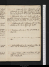Jan. 5. Su. Osorio, acts 4 & 5: Sophonisba, act 1. Eliza Fenwick & F G call: dine at King's, w. Derville, Rogers, Consit, ami de Pitt, & 4 Gardners; adv. Granard, Tyson, Pinkard, 2 Davis's & Boisgelin. Write to Dewar.
6. M.Sophonisba, acts 2, 3, 4. L J calls: call, w. M, on Noble, Symonds & Longman: C & H Willis: dine at Fancourt's, w. Northcote, Macquin & Chandler; adv. Faulkner, Pinkard, Saxon, mrs Johnston & 4 Hs. call on Ritson: meet Perry.
7. Tu.Sophonisba, act 5: Gloriana, acts 1 & 2. Dine at Fell's, w. M, F, M, L, L J & miss Axtel.
8. W.Gloriana, acts 3, 4, 5. Dine at C Smith's, w. Fenwicks.
9. Th.Mithridates, acts 1 & 2: Necrology, çala. Fell sups.
10. F.Mithridates, acts 3, 4, 5. //Call on S Elwes: M dines: sup at M Robinson's. Jo G calls.
11. Sa.Cæsar Borgia, acts 1 & 2: St Leon, Vol. I. Jas Wt dines: tea Coleridge's, criticisms: meet Fenwick & Underwood.
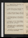Jan. 12. Su.Write to Curran. Meet Disney (& B Hollis): M, Fell, H G & L J dine.
13. M.Revise St Leon. Horsman & Monbray call: Cuxsonna: sup at Reynolds's, w. Boaden.
14. Tu.Revise. Write to Ht. Horsman calls: sup at Nicholson's, w. Sadler; adv. Davis: meet Sharp.
15. W.Cæsar Borgia, acts 3, 4, 5. Call on Robinson: Horsman, Fell & Jas Wt dine: tea M Robinson's, w. Coleridge.
16. Th.Constantine, acts 1 & 2. Call on Northcote; talk of Shakespear: M dines; adv. Fell: theatre, Joanna; adv. Estee. meet Hazlit.
17. F.Read Antonio, acts 1 & 2: Robert Mortimer, p. 30: St Godwin, pp. 235. Sup at Opie's, w. Tho. Woodhouse. J G dines.
18. Sa.Rt Mortimer, p. 61, fin. Sup at M Robinson's, w. Coleridge; adv. D Stuart.
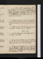Jan. 19. Su.Notes on R M. Constantine, acts 3, 4, // 5: Mitford, p. 128. Fell calls. Lanesborough's, w. Milton, Laval, Granard, Gardiners, Tyson, mrs Pilkington, Wolcot, Danvers, Davis's, Philips, Campbels, Pinkds, Boisgelin, //Gore, & la Chaussée
20. M.Mitford, p. 212. Nicholsons call: sup at C Smith's; adv. L Newhouse.
21. Tu.Mitford, p. 2//60. Meet Moore, Knight Rt, Perry & Fenwick: call on Barry: dine at King's, w. Granard, Boisgelin & St Hermine; adv. Goire & Davis. Parliament meetse.
22. W.Mitford, p. 275. L J calls: meet J Taylor's ambassador: M dines: sup at Cuxson's. Steevens dies.
23. Th.St Leon, Vol. II & IV. Fell calls: call on Coleridge; adv. Estlin.
24. F.Revise St Leon. Mitford, p. 291. Meet Moore: theatre, Joanna, act 3; adv. Fenwicke: call on Fell. Letters from Ht & Arnot: write to M Cotton.
25. Sa.Troilus, act 3: Mitford, p. 312. Call on Robinson, //Tobinn & Jo Gn: meet J G: theatre, Adelaide; adv. Este, Pratt, Hoare, Reynolds, Morton, Lawrence & Felle.
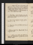Jan. 26. Su. Write to Ht & Arnot. Sigismunda: Mitford, p. 340. Dine at King's, w. Danvers & Walstein: adv. Granard, Gardners, Tyson, Moore, Pilkingtons, Campbels, Davis's, Philips, Dorroty, Abbot, Boisgelin, de Bath & Consit. J J G calls. Pinkard.
27. M.Cinyras. Mitford, p. 352. Call on Northcote: M dines: Hazlit après. meet Batty.
28. Tu.Meet S Elwes: call on Nicholson: dine at Johnson's, w. Fuseli, Bonnycastle, Wells & Jas Wt. Write to Ht & Arnot.
29. W.Flower & Leaf: Mitford, p. 454, fin: Gibbon, Vol. II, p. 57-117.
30. Th.Theodosius. Dine at S Elwes's; adv. Harris & mrs Holcombe.
31. F.Palamon, Book 1 & 2. Stewart calls: tea Coleridge's, w. Leslie.
Feb. 1. Sa.Gibbon, p. 243. Tobin calls: Ja Wt dines: theatre, 3/10 Castle Spectre, & Of Age Tomorrow (adv. Riddel)e: M sups.
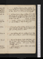Feb. 2. Su.Antonio, prose, 1/2 page. Gibbon, p. 264; Vol. III, p. 30. Meet Perry & G Richter. J J G at tea: sup at mrs Robinson's, w. Crespigny.
3. M.Antonio, prose, 1/2 page. Gibbon, p. 113. Call on M Robinson, adv. Crespigny; & S Elwes, adv. mrs Holc: (meet Stephens:) theatre, 1/6 Mysteries of the Castlee: M sups: Fell calls n. St Leon, 2nd Edition
4. Tu.Theodore: Gibbon, p. 142. Meet Sturt & Hoare: sup at S Elwes's. Write to Wedgwood.
5. W.Polyeucte, acts 1, 2/2: Gibbon, Vol. II, p. 315. Coleridge calls, talk of tragedy: M dines, talk of Camelford: sup at Reynolds's, w. C Moore.
6. Th.Read Antonio, acts 1 & 2. Gibbon, p. 420. Otton calls: call on S Elwesn: sup at Fell's. Deliquiume.
7. F.Invent . Ventidius: Duke & No Duke: Gibbon, p. 434. Tea Coleridge's, w. Lamb, Tobin, Montagu & Pinney. Call on Jo G: Chapter C. Tartuffe, act 3.
8. Sa.Gibbon, p. 470. Call on S Elwes: dine at Lamb's, w. Coleridges.
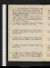Feb. 9. Su.Rosamund Gray, pp. 136: Warton on Pope, p. 56. Fenwick, Fell, S Cuxson & H G call: dine at King's, w. Danvers; adv. Gardners, Tyson, Penny, cn Gardner, Pilkingtons, Derville, Boisgelin, Davis's, Abbot, Dogherty, Consit & Philips.
10. M.Gibbon, p. 496: Warton, p. 120. Call on Foulkes: M dines: theatre, w. S Elwes, Plough & Raymond & Agnes; adv. Willis's, Walker & Me: sup. Write to T Wedgwood.
11. Tu.Antonio, p. 2. Gibbon, Vol. III, p. 181: Warton, p. 225. Call on S Elwes, evg: Tobin calls n.
12. W.Gibbon, p. 208: Warton, p. 254. Call on Tobin Leslie ; adv. Leslie: tea C Smith's, w. Coleridge & miss Barker: Fenwick calls.
13. Th.Gibbon, p. 226: Warton, p. 335. Theatre, Plow, acts 2 & 3e: Call on Coleridgen: sup at Nicholson's.
14. F.Gibbon, p. 338. Call on Coleridge & Fell n: sup at Cuxson's.
15. Sa.Gibbon, p. 412. Richard & Ra Fell call: S Cuxson calls: Opera, w. Fell, Semiramide, & Hylas & Temize (adv. Rogers, Consit, Siddons, Arabin jr & Davis jr.)e
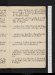Feb. 16. Su.Gibbon, Vol. IV, p. 42. Call on Coleridge; adv. Lamb: dine at H Tooke's, w. Burdet, Gawlers, Sharpe, Clifford, Morgan, Malkin, Boddington, Wardle & Coleridge.
17. M.Semiramide, acts 1 & 2: Gibbon, p. 70. Fell calls: call on Coleridgen: sup at M Robinson's. Write to Wedgwood.
18. Tu.Antonio, p. 4. Call on E Fenwick; adv. M Hays: meet Hoare & Reynolds: Fell at tea: sup at F's.
19. W.Antonio, p. 5. Meet Dyer, Stewart, Reynolds & R Johnson: theatre [Fell]e: sup at S Elwes's.
20. Th.Antonio, p. 6. Call on Coleridge & S Elwes: S Cuxson at tea: sup at M Robinson's.
21. F.Gibbon, p. 108. Dibbin calls: meet T Knight, Consit & Davis: call on E Reynolds: sup at Opie's, w. Northcote. Theatre, Pizarro, act 3e: Tobin calls n.
22. Sa.Gibbon, p. 168: Salzmann, p. 68: La Roche, pp. 14: Ruth. Leslie calls: sup at M Robinson's, w. Coleridge.
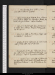Feb. 23. Su.My Own Life, p. 5 1/2. Gibbon, p. 203-263. Call on S Elwesn: H G dines.
24. M.Life, p. 8. Bonaparte, Part III, p. 52: Salzman, p. 104. Call on S Elwes: tea Coleridge's: theatre, Raymond; adv. Jas & C Mooree. Call on Foulkesn.
25. Tu.Life, p. 10. Hazlit calls: dine at Johnson's, w. Fuseli, Rose, Lindsay, Morgan br & Edgworth j: sup at S Elwes's.
26. W.Life, p. 12: Note on P J & Enq., 1 page. Call on Foulkesn. Contusione.
27. Th.Gibbon, p. 324: Salzmann, p. 206. Foulkes, calls: J Hollis calls: sup at Cuxson's.
28. F.Bonaparte, p. 182, fin: Salmann, p. 306, fin. Call on Jo G: meet S E & mrs Holcombe: call on Coleridge: sup at Reynolds's, w. C Moore.
Mar. 1. Sa.Emile, p. 97-135. Call on Ja Moore (adv. mrs Angerstein & miss Locke), S En, C Smith (adv. miss Barker), mrs Robinsonna: sup at Nicholson, w. Carlisle.
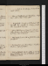Mar. 2. Su.Emile, p. 158. Coleridges & Lambs dine{,} invité Carlisle.
3. M.Dine at Northcote's; adv. Humphreys: M dines n: call on S Elwesn: Keir calls n.
4. Tu.Write to Ht. Convent of St Michaele. S Elwes calls: tea C Smith's, w. Coleridge, Northcote, Fenwicks & Duncans.
5. W.Call on M Robinson, w. Fenwicks: S Cuxson calls: M dines: tea Coleridge's, w. Dyson, Tobin & Pinney. (adv. Crespigny.)
6. Th.Mordaunt, p. 266. Call on J G & Ritson: dine at S Elwes's.
7. F.Mordaunt, p. 403. Meet S Elwes: Chapter C: M dines: sup at J Hollis's.
8. Sa.Hall on Infidelity, pp. 83: Gibbon, p. 338: Mordaunt, Vol. II, p. 144. Call on Northcote: sup at M Robinson, w. Wolcot.
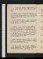Mar. 9. Su.Life, p. 16/2. Gibbon, p. 390: Mordaunt, p. 168. Call on S Elwesn: sup at Lamb's, w. Coleridge.
10. M.Antonio, 1 page. Lloyd to the Anti-Jacs, pp. 38: Ecole des Femmes, actes 1 & 2. Meet Reynolds, Holman, C Kemble, & Tierney & Perry: theatre, Country Girle.
11. Tu.Note on Antonio. Mems, 2 1/2 pages. Mordaunt, p. 243. Theatre, Egyptian Festival; adv. Lawrence, (Inchbald,) Stevenson & sharere.
12. W.Antonio, 1 page. Mems, 1 1/2 pages. Holy Dying, p. 36: Mordaunt, p. 343. Call on S Elwes; adv. mrs Holcombe: tea Opie's, w. sir Robt Barclay, Hoare & Walker Eidouranion. Write to Jos. Wedgwd.
13. Th.Gibbon, p. 443: Mordaunt, p. 408; Vol. III, p. 105. Call on Jas Mooren (adv. Dr M), Reynoldsn: sup at C Smith's: Tobin calls.
14. F.Notes of Antonio. Bajazet, actes 1-4: Gibbon, vol. V, p. 48: Mordaunt, p. 131. Northmore & Welby call: call on Fell: sup at Cuxson's.
15. Sa.Antonio, 1/2 page. Bajazet, acte 5: Rodogune, acte 5: Gibbon, p. 62. Call on Coleridge at Lamb's, & Fell: Coleridge at tea; adv. Dewar; Read.
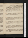Mar. 16. Su.Antonio, 1 page. Hollis, J J G & Ht. G call{:} dine at King's, w. mrs Campbel, Pilkingtons, Wolcot, de Bath, Bel Arbre, Jobson, Dogherty, Consit & Tyson{;} adv. St Hermine, Boisgelin, Campbel & Rogers junr.
17. M.Gibbon, p. 87: Mordaunt, p. 254. Call on S Elwes n: meet Frend & E Christie: Dewar dines: sup at M Robinson's.
18. Tu.Transcribe 5 pages. Call on S Elwes: sup at Lamb's, w. Coleridge; talk of style.
19. W.Antonio, p. 32/2, 33. Claudian, Prob., 204: Holy Dying, p. 54: Mordaunt, p. 460, fin. Call on Fell, Reynoldsn & Nicholsonn.
20. Th.Antonio, p. 34. Conversion of Pedro. Claudian, Prob.: Holy Dying, p. 64: Pride's Cure. Tea Lamb's, w. Coleridge. meet R Jones.
21. F.Antonio, pp. 33, 34, 35. Claudian, Ruf. I, 116: Joan, p. 76. S Elwes calls: theatre, Acis & Galatea; adv. C Kemble & T Knighte.
22. Sa.Antonio, p. 37. Claudian, Ruf. I, 389: Joan, p. 156. Call on Northcote & S Elwesn: Dewar calls: sup at J Hollis.
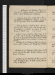Mar. 23. Su.Antonio, p. 38. Claudian, Ruf. II, 227: Joan, p. 227. Call on Coleridge at Lamb's, & Fenwicks: sup at M Robinson's, w. Cuppage.
24. M.Claudian, 439: Joan, p. 268. Call on Hoare; adv. Randal: meet R Johnson: M dines: call on S E: sup at Reynolds's, w. mr & mrs R R & R North.
25. Tu.Notes of Antonio. Claudian, Ruf.: Corancez, pp. 104: Joan, Vol. II, p. 64. S Cuxson calls: call on Northmoren & B Hollis: tea Fell's, w. M, F & M: theatre, St David's Daye. meet Burrel.
26. W.Antonio, 1 page. Claudian, Ruf.: Joan, p. 181. Jo G calls: call on Coleridge, Felln & E Christien: dine at King's, w. Granard, Pilkingtons, Wolcot, Bruhl, Stewart col., Barnet, Copperthwaite & Holmes; adv. Bel Arbre.
27. Th.Antonio, p. 40. Claudian, Ruf: Joan, p. 280. Hoare calls n: M dines; adv. Dewar: sup at S Elwes's.
28. F.Antonio, p. 43. Claudian, III Hon.: Joan, Vol. III, p. 222. Tho. Norton calls: theatre, Creation; adv. O'Brien & Sherwine.
29. Sa.Antonio, p. 45/2. Claudian, IV Hon., 213. Coleridge breakfasts, dines & sleeps: meet Gillies, Tierney & Bel Arbre.
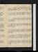Mar. 30. Su.Antonio, 1 page. Claudian, 418. Ritson calls: West End, w. Coleridge: Lambs dine{;} adv. Dewar: Dibbin calls n. 2nd day, Colerde
31. M.Antonio, p. 46/2. Tobin calls: tea S Cuxson's (Henry): call on S Elwes; adv. Egerton. 3rd day, Ce.
Apr. 1. Tu.Antonio, p. 29/2. Claudian, 655: Joan, p. 298; Vol. IV, p. 91. L'Adieu François: call on S Cuxsonn & S Elwes.
2. W.Antonio, p. 30. Claudian, IV Hon: Gibbon, p. 122: Joan, p. 345, fin. Dewar calls: sup at M Robinson's; adv. Crespigny.
3. Th.Antonio, p. 31. Claudian, IV Hon. Fell calls: M dines: call on Foulkes & C Smith n: sup at Opie's; adv. Fuseli.
4. F.Antonio, p. 33. Gibbon, p. 150: Letters from Lausanne, Vol. II, p. 32-106. S Elwes calls: M dines; tea S Cuxson's: call on M Hays; adv. soeur.
5. Sa.Antonio, p. 34. Claudian, Epithal., 160: Holy Dying, p. 96: Lausanne, p. 220, fin. Call on Jo G & Fell.
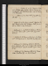Apr. 6. M. Su.Antonio, p. 33, 34/2. Claudian, Epith., 341. J Hollis calls: Jo G do: call on S Cuxson; adv. mrs Boydel: H G, M & Dewar dine: sup at Fenwick's, w. B. Plumptre.
7. Tu. M.Antonio, p. 37. Write to Ht. Jo G calls: Hazlit sups.
8. Tu.Antonio, p. 39 & 2 pages: invent . Claudian, Fescin: Horaces, actes 1 & 2. M dines: West's fire, w. F: call on S Elwesn & mrs Holcombe.
9. W.Antonio, p. 1-5/2. Write to Robinson. Bp Taylor, p. 110. S Elwes calls: call on Fell: sup at Nicholson's.
10. Th.Antonio, p. 8/2. Horaces, actes 3 & 4: Coriolanus, act 1: Bp Taylor, p. 132. Meet R R: tea E Reynolds's.
11. F.Antonio, p. 10. Claudian, Gild., 212: Vallaton, p. 54. Robinson calls: meet R & F Reynolds, Bosville, C Kemble & Twiss: sup at C Smith's, w. Geo: Dewar at tea.
12. Sa.Antonio, p. 14/2. Claudian, Gild., 420: Dewar versus Malthus, pp. 42. Sup at Lamb's.
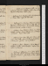Apr. 13. Su.Antonio, p. 18/2. Claudian, Gild., 526: Coriolanus, acts 2 & 3: Vallaton, p. 104. Dine at Southgate's, w. Keylocks, Crabbs & Jo G.
14. M.Antonio, p. 21. Claudian, Gild.: Coriolanus, act 4. Dewar, S Elwes & J J G call: Keir sups.
15. Tu.Antonio, p. 23. Claudian, Theod., 102: Coriolanus, act 5: Vallaton, p. 151. S Cuxson calls: dine at Johnson's, w. Fuseli, Henley, Bonnycastle, Lindsay, Mawman, Wilson, A Aikin & Henry.
16. W.Antonio, 1 page. Claudian, Theod., 339. Meet W Webb: M dines: sup at M Robinson's, w. H Heslop & J Calvert. Major White calls.
17. Th.Antonio, 1 page. Henry VIII, act 1: Timon, acts 1 & 2. Meet Batty: call on Northcote; adv. Gardner & Bourgeois: J G dines: sup at J Hollis's.
18. F.Antonio, 1/2 page. Claudian, Theod. Udney's Pictures, w. Felle: Fell & M dine: sup at Reynolds's, w. Boaden.
19. Sa.Chalmers's Appendix, p. 52. Call on Robinson, Parr (adv. Street & Erskine), Porsonn, Perryn, Hoaresn & Smirken: L J & Dibbin at tea: sup at Cuxson's.
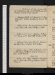Apr. 20. Su.Chalmers, p. 147, fin: Junius, çala. Jo G & M Robinson call: sup at M Robinson's, with Martins, Fenwicks & miss Saunders.
21. M.Claudian, Eutrop., 228: Junius, p. 74. Major White calls n: theatre, Merchant of Venice 4/5e. Fell calls.
22. Tu.Antonio, 8 lines. Merchant of Venice: Junius, p. 126. S Elwes calls: call on M Hays, & Felln.
23. W.Antonio, p. 21, 22, 23. Claudian, Eutrop., 513: Timon, act 3. Meet Fell: theatre, 1/5 Wille.
24. Th.Antonio, p. 24/2. Timon, acts 4 & 5: Junius, p. 188. Call on Parrn: M dines. Write to Parr.
25. F.Antonio, 2 pages. Antony & Cleopatra, acts 1 & 2. M Robinson, Northcote, Carlisle & Fenwicks dine: invité Kemble. Cowper dies.
26. Sa.Antony, act 3. S Elwes & A Walker call: M dines; adv. S E: Lamb sups; talk of Rousseau , Milton , Brown , &c.
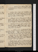Apr. 27. Su.Antonio, p. 25. Call on S Elwes: dine at M Robinson's, w. F & M; adv. Northcote, Porter & Denham.
28. M.Antonio, 1 page. Osorio, act 1. Exhibition; adv. Wolcot, Este, Opie, Heath, Humfires, Porter, J Taylor, W Taylor, Perry, Boaden, Crisp, Stoddart & Felle: dine at Fell's, w. F, M, M & Toke.
29. Tu.Antonio, p. 23, 24. Osorio, acts 2 & 3. Tobin, Al. Walker & S Elwes call: dine at Foulkes's, w. Gurneys, Hovels, Burdons, Hollick, Goodwin & mrs White: theatre, De Montfort; adv. Stacpoole, & Este & Gurneyse.
30. W.Antonio, p. 21, 22, 23/2. Osorio, acts 4 & 5: De Monfort. Robinson calls & S Cuxson call: call on mrs Foulkes (adv. mrs White) & Barker, w. S Elwes: sup at S E's. meet Burrel.
May 1. Th.Antonio, revise. Count Basil, act 1. Call on Opie, & Boadenn: M dines: theatre, w. Ml & F & Cha W; adv. Reynolds'se. Letters from Parr & Lauderdale. Miser, Paul & V , & R & Agnes. Mrs Foulkes & A On call. meet Pinkds.
2. F.Write to Ht, w. Opie. Porter's Seringapatam, & Milton Gallery; adv. Jas & C Moores (& W Spencer)e: meet (Parr &) Pinkard: S Elwes dines: call on M Robinsonn & Lambn: H G & miss Axtel sup.
3. Sa.Maid's Tragedy, acts 1, 2, 3: Count Basil, acts 3 & 4. Call on Carlisle (adv. Sloper senr), Nicholson (adv. Combe) & A Walker: Bedford House; adv. Gardners, Batty, Porter, C King, Noble & miss Tooke: tea Fell's, w. F & M: M sups.
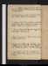May 4. Su.Antonio, revise. Count Basil, act 5: Trial, com. A Walker & Dibbinn call: tea E Reynolds's, w. mrs Nugent.
5. M.De Monfort, preface, pp. 72. Munford & S Elwes call: M dines: theatre, Good- Natured Mane.
6. Tu.Antonio, revise. Heir of Villeuve, 4 acts: Maid's Tragedy, act 4. Call on M Robinson: adv. M E R & mrs Martin: theatre, De Montfort; adv. sharere.
7. W.S Cuxson, Fawcet & J Hollis call: Bedford-House{.} Fawcet dines: sup at Lamb's.
8. Th.Maid's Tragedy, act 5: Religio Medici, çala. Northcote sups; adv. M.
9. F.Antonio, p. 28. S Elwes calls: Exhibitione: call on S Elwes; adv. mrs Holcombe: sup at M Robinson's, w. Northcote, Carlisle, Fenwicks & E Braddock.
10. Sa.King & No King, acts 1 & 2. M & S Elwes dine: theatre w. them, Indiscretion; adv. Lawrence & Alexandere.
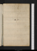No. IX
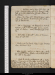May 11. Su.Antonio, revise. King & No King, acts 3 & 4. Scornful Lady, acts 1 & 2. Munford calls; talk of poetry & reputation: J J G calls: S Elwes at tea: M sups.
12. M.King & No King, act 5. Munford dines: call on S Elwes; adv. Parker: M Robinson & fille at tea: sup at M Robinson's.
13. Tu.Call on Mauman; adv. Wrangham & Dr Simmons: Fell, major White & S Cuxson call n: Egham coach; sleep at Stainese. meet (Sheridan,) Este & Porter.[Not in London]
14. W.Mrs Cotton & H G call n: dine at Windsor: sleep at Salt Hill.[Not in London]
15. Th.Coach, w. sir Cha. Marsh & lady's maid: M & Fell dine; adv. Lamb & Ht G. Hadfield, Drury Lanee[Not in London]
16. F.Elder Brother, acts 1, 2, 3. Call on Opie, Robinson n, Noble, Ritson [n?] & S Elwes: theatre, w. M, Liberal Opinionse: call on Reynolds n.
17. Sa.Write to Coleridge & Burdet. Call on Robinson & Perry ; adv. sir R B & Allen: meet Ritson: dine at Milton Gallerye, w. Fuseli, Opie, Northcote, Smirke, Flaxman, Nollekens, West,) Lawrence, W Turner, Bourgeois, Shee, Westal, Banks, Smith, Heath, Reynolds eng., Hoare (Angerstein, Boydel, Gilpin, Beechey), Bannister, Johnson, Morgan Malkin & Dr Simmons: sup at Hoare's w. N, O & Reynolds. Chalmers, Porter.
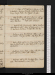May 18. Su.Dine at H Tooke's, w. 3 Oxfords, 5 Scotts, 2 Burdets, 3 Harveys, Bosville, Tooke, Dyer, Wardle, Perry & miss Sloper: tea Oxford's: M sups.
19. M.Elder Brother, acts 4 & 5: Chances. Call on S Elwes & Opie n: sup at M Robinson's, w. Northcote & Martins. Fell calls: M dines.
20. Tu.Write to Ht, & à ma mère. Call on Foulkes n: M Robinson calls n: dine at Johnson's, w. Fuseli, Robinson, Chalmers & Edgworth; adv. Rose.
21. W.Antonio, revise. Nice Valour. S Elwes calls: call on Foulkes: Munford at tea: sup at Ja Moore's.
22. Th.Rule a Wife, acts 1, 2, 3. S Cuxsons at tea: (mt Parr & Opies:) call on Opien & Reynoldsn: sup at Nicholson's.
23. F.Antonio, revise. Rule a Wife, acts 4 & 5: Pilgrim, acts 1 & 2. S Elwes calls: M dines.
24. Sa.Pilgrim, acts 3 & 4: Dryden's Essay. Fawcet calls: tea Barbauld's, w. mrs Aikin.
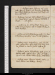May 25. Su.Antonio, revise. Pilgrim, act 5. Jo G calls: dine at King's, w. col. Thornton, Wolcot, Danvers, E Sturt, Massygar, Bernard, Lovel, Hubbard & Agar; w. Davis.
26. M.Antonio, p. 40, 41. Wit without Money, act 1, 2. Fawcet dines: sup at Opie's, w. Northcote & Fuseli. adv. R Jones.
27. Tu.Antonio, p. 42. Wit without Money; fin: Little French Lawyer. Call on Foulkesn & Fenwkn: meet Malthus.
28. W.Antonio, p. 46. Valentinian, acts 1 & 2. Meet B Montagu (au près): Lamb & Fell at supper.
29. Th.Antonio, revise. Valentinian, act 3. Hazlit calls: call on Opie: après-diner, miss King & M: tea J White's, w. Lamb & Gutch: call on J G.
30. F.Antonio, revise. Valentinian, acts 4 & 5: A Walker calls: call on Opie: dine at Fell's, w. Lamb & M: Sadler's Wells, Richer & P Wilkinse.
31. Sa.Antonio, revise. Spanish Curate, acts 1, 2, 3. Meet S Elwes & mrs Ketting: M sups.
June 1. Su.Antonio, end of act 3. Fenwick calls: M dines: sup at mrs Robinson's (Allingham's), w. Fenwick.
2. M.Fairy Queen, Canto I: Rollo, acts 1 & 2. Dine at M Robinson's (Allingham); adv. Macmahon: call on Northcote (adv. père), & Fenwick, w. M Rna: S Kg calls n.
3. Tu.Fairy Queen, Cantos II, III: Rollo, act 3. Call on Opie: M dines: sup at Cuxson's.
4. W.Fairy Queen, Canto IV. Write to Bage & Burdet. A Walker calls: M Robinson at tea, w. M: call on Fenwick: sup at M Robinson's , w. M.
5. Th.Cordelia, Vol. I. Call on mrs Foulkes, Opie, Christie (incog) & Colman (do): meet Willis, Stewart, Carlisle & Bourgeois: S King calls n: call on Reynoldsn.
6. F.Write to Ht. Call on Lawrencena: Putney, & Packhorse Turnham Green, w. M Robinson, M E R & F; meet H Tooke & Burdet.
7. Sa.Fairy Queen, C. V, VI: Warton on Pope, Vol. I, p. 134: Cordelia, Vol. II. Pitchford calls: call on Opie: M dines: S E sups.
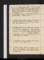June 8. Su.Fairy Queen, C. VII: sir Tho. More, apud Johnson's Dict. A Walker calls: meet Richter (& Crisp): dine at King's, w. Dogherty, Stafford, baron Starke, Fletcher, Agar, Hubbard & Kelly; adv. Wood, Pinkard & Moore. M Robinson calls n.
9. M.Shepherd's Calendar; 5 Ecl. M Robinson at tea: sup at Elwes's. S Cuxson calls.
10. Tu.Fairy Queen, C. VIII; Shepherd's Cal., Ecl. 6, 7: Robinson on Women, pp. 104. Davis of Tamworth calls: tea Barbauld's, w. F & { }
11. W.Antonio, act 4, p. 1, 2/2. Rollo, act 4, 5; Wife for a Month, act 1. Meet Reynolds & Lewis: call on mrs Tylern & Opie: tea M Robinson's, w. Wolcot, Northcote, 4 Porters, 2 Fks, Denham, Lettsom jr, Heslop & Calvt: Fell, S Elwes & Talbot call n.
12. Th.Fairy Queen, C. IX: Arnot's Journal, 3 Nos. Mrs Arnot & Lucy call: M sups.
13. F.Arnot's Journal, No. 6. A Walker calls: M Robinson at tea: sup at M Robinson's.
14. Sa.Antonio, revise. Wife for a Month, act 2. M dines; adv. M Robinson: call on Ritson: Sadler's Wells, w. M, M R, M E R, F & Cha. Willise. Tobin & S Cuxsonn call.
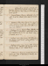June 15. Su.Antonio, p. 4. Wife for a Month, act 3: Claudian, Eutrop. II, 257. Hazlit & S Cuxson call: M R don: John Lawrence: tea Fell's, w. F & M: Fell sups: call on Lambn.
16. M.Tyrrwhit of on Chaucer, Vol. IV, pp. 189. Fell calls: M at tea: theatre (Ht) 1/3 Inkle, & 'Tis All a Farcee.
17. Tu.Claudian, 461: Fairy Queen, C. X.: Arnot, No. 9, fin. Cuxsons & Lamb call n: dine at Johnson's, w. Fuseli, Bonnycastle, Edgworth, Well's & 2 Aikins; adv. Newnum.
18. W.Claudian, 602, &c. Write to Davy. A Walker calls: call on Colmann & Northcote: meet Porter & Davis: dine at Fell, w. M, F & M; adv. Lamb. Wife for a Month, acts 4 & 5. Battle of Marengoe
19. Th.Antonio, revise. Fairy Queen, C. XI. E Christie calls: M dines: meet Lambs: call on Ja Mooren: sup at M Robinson's.
20. F.Antonio, revise. Fairy Queen, C. XII: Spanish Curate, acts 4, 5. A Walker calls: Cuxsons at tea. Claudian, Stilic, I, 230. Write to Ht.
21. Sa.Antonio, p. 5. Humorous Lieutenant, act 1: Claudian, 382. Sup at Reynolds's, w. Morton, Morris; C Kemble.
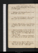June 22. Su.Antonio, revise. Claudian, Stilic. II, 278. Humorous Lieutenant, act 2. Dine at Lamb's, w. M, Fell & Gutch.
23. M.Claudian, 476. Malone's Dryden, p. 90. A Walker calls: sup at Fell's.
24. Tu.Parke, p. 118. S E breakfasts: S Cuxson & Jas Moore call: sup at M Robinson's, w. Fenwicks.
25. W.Claudian, Stilic. III: Parke, p. 230. Write to Harris. Robinson calls: M dines: Fell calls: M & S E sup.
26. Th.Humorous Lieutenant, acts 3 & 4. Call on Northcote: meet A W, Underwood, Henley, Reynolds & R Johnson: tea S E's, w. mrs Ketting: sup at Opie's, w. Tho. Woodhouse.
27. F.Claudian, Stilic. I: Humorous Lieutenant, act 5: Malone, p. 328. Fell calls: sup at S Elwes's.
28. Sa.Malone, p. 390: Claudian, Stilic. II, 207. Write to Ht & M. Call on Escher & Lawrence: S Elwes dines; adv. Fell. Walker calls.
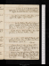June 29. Su.Malone, p. 438. M, H G & L J dine; talk of Dyson: Holyhead coach, w. Coddington, ---- & (from Barnet) Newcome: sup at Redburn.[Not in London]
30. M. Breakfast at Northampton: dine at Litchfield: tea Stafford: sup at Chester.[Not in London]
July 1. Tu.Coach w. Palmer (Wrexham), Grange & Corkian: breakfast at St Asaph: dine at Bangor: Wherry, w. Palmer, Corkian, 7 Vernons, Carew Smith, C George & un Anglois; 7 night to 11 morning[Not in London]
2. W.Dublin, Marine Hotel: Ely Place: dine Rathfarnham, w. R Curran & W Cree: sleep.[Not in London]
3. Th.Love of Fame, Sat. I. Introd, Dr Burke, capt. Atkinson & Bushe: dine at Colles's, w. Cs, Burros, Arch, Ridgway, Cogan, &c. Dysone.[Not in London]
4. F.Queen, B. II, C. I: Love of Fame, Sat. II: Killala, p. 136: call on Caldweln & Drennann: Macnally, Burton, Bennet, Cree, & R & A, E & S Currans dine. talk of Parr.[Not in London]
5. Sa.F Queen, C. II: Love of Fame, Sat. III: Killala, p. 182, fin. Introd. Spencer: Skeys calls: call on E Bishop: Macnally, Skeys, Crees & 4 Currans dine. talk of M Hughes. Fell married[Not in London]
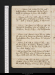July 6. Su.F Queen, C. III. Caldwel & Colles call n: Rathfarnham, Bushe calls: Sir Jno. Doyley, Batley & 3 Granges & Glover: tea Batley's.[Not in London]
7. M.F Queen, C. IV: Fox's Letter, pp. 43. Drennan calls: dine at Gould's, w. C, Bushe & Seckerson. talk of miracles, flattery & self-praise.[Not in London]
8. Tu. F.Queen, C. V. Granard & Atkinson call n: K B, Mcgrain v. Armstrong : dine at Caldwel's, w. Cs, Cockburns, Rowley & Skeys: sleep Rathfarnham.[Not in London]
9. W.F Queen, C. VI: Rowan's Trial, pp. 152. Call on E B: dine at la. Moira's, w. Granards, M Mountcashel, //Hamiltons, Pym, Moore & C; adv. genl Conway.[Not in London]
10. Th.Bacon, p. 16. Call on Caldwel & Skeys: dine at Macnally's, w. Fletcher, Ridgway, Colles's, Ginnis's, Shaws, Cs, Burton & mrs Featherstone: sleep Rathfarnham.[Not in London]
11. F.Call on Moira (adv. Scully & Barnet)Exhibition, E B & W Placee: dine at Delane's, w. cousins, Skeys, Trotter & Cs; adv. E B & Everina: sleep Rm.[Not in London]
12. Sa.F Queen, C. VII. Ride to Kilmansheg hill: Grattan, Granard, Pim, Hamilton, Moore, Burke, Wallis, Macgray & Conway dine: G sleeps.[Not in London]
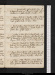July 13. Su.Barret calls: call on Webb: dine at la. Mountcashel's, w. C (Dargle & Scalp): sup at Grattan's, w. C, Gould, Hartley & Trotter: sleep.[Not in London]
14. M.Henry, B. IV, ch. 7. Hartley, Trotter & Blackwood breakfast; adv. Sheehy: Dargle & Water-Fall: Gould, Trotter & C dine: sleep.[Not in London]
15. Tu.Meet Grattan, Daly & Ledwick: call on E B & Atkinsonn: Rathfarnham; Gould, Batley & Glover dine; Gould sleeps.[Not in London]
16. W.Grattan v. Clare, pp. 44. Wright calls: call on mrs Lefanu, w. Everina; adv. Wright: dine at Reeves's, w. C, Gould, Burton, Quins, Elwards's, Dwyer, Keller & Terry: meet mrs Plunket: tea O'Reily's, w. Cs.[Not in London]
17. Th.Finerty's Trial, pp. 113. Walk w. Bennet (St Patricks & Kilmainham): Rathfarnham, Cs, Delane, Skeys, Trotter & Batley dine.[Not in London]
18. F.Clare's Speech, pp. 101. Call on Hamilton: dine at Drennan's, w. C, Hinckes's, Holmes, Hartley, Orr, Caldwel, Glennie & another: sleep Rm.[Not in London]
19. Sa.F Queen, C. VIII: Mullala, p. 134. Caldwel calls: dine at Lefanu's, w. C, E B, Everina, Thomas's, Ginnis's, Cuthbert & Dr Bell: sleep Rm.[Not in London]
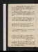July 20. Su.F Queen, C. IX. Talk of free will & demerit, & profound thinkers: meet J Bannister: dine at Webb's, w. Cs, la. Mountcashel, Gould, Terry & 3 Reeves's: sleep.[Not in London]
21. M.Speeches for Howison, pp. 67. Vigogne calls: dine at Mountcashel's (Glen of the Downs): call, w. her, on J C Walker: sup at Webb's, w. Reeves's: sleep.[Not in London]
22. Tu.Curry's Dialogue, pp. 162. Bray Diligence, w. mrs & miss Reeves: dine at Burton's, w. Cs, Quins, Elwards's, Keller, Butler & Glover.[Not in London]
23. W.F Queen, C. X: Bacon, p. 36: Mullala, p. 333, fin. Call on Hamiltonn: Daly, Jennings, E B, Everina & Cs dine; adv. Kirwan.[Not in London]
24. Th.Curry's Memoirs of 1641, p. 136. Meet Pim: call on Moira: sup at E B's.[Not in London]
25. F.Memoirs, p. 175, fin. Four Courts, Lattin v. Duigenane: sea-bathe: dine at Hamilton's, w. C, Daly, Higgins & Frizel: call, w. C, W Place. deliquiume.[Not in London]
26. Sa.Curry's Review, p. 56. Rathfarnham, Gould breakfasts: dine at Caldwel's, w. C: call, w. him, on Kirwan; adv. two priests: tea W Place: Grattan calls Rathfarnhamn.[Not in London]
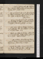July 27. Su.Leland's Ireland, çala. Ki Rathfarnham; Kirwan (talk of Eloise & Hume), Burke & Glover dine: Glover sleeps.[Not in London]
28. M.Old Court: Devil's Glen, w. la. Mountcashel, mrs Moore & 2 Enfants: dine, w. them, at Dunran: sleep at Christie's hotel, Bray. deliquiume.[Not in London]
29. Tu.Old Court, breakfast (d): call on J C Walker: dine at Grattan's; talk of O'Connor, Emmet & secession (Macleod expected): no sleepe.[Not in London]
30. W.Asks of R C; talks of Strafford & Leland: meet Gatecliff: dine at Cockburn's, w. C, Lattin & Castle Brown: sleepe.[Not in London]
31. Th.Sketch of a letter to Coleridge. Call on Skeysn, Drennan & E B: Rathfarnham, Glover dines & sleeps. talk de l'argt.[Not in London]
Aug. 1. F.Call on W Place, Hamilton, mrs Reeves, Lefanun, Kirwann, Caldweln & la. Moiran: Rathfarnham, Glover dines & sleeps.[Not in London]
2. Sa.Write to M, 2 letters. Leland, V. III, p. 85-114. Burke & Planard dine. talk of insincerity & Lawrence, & d'une 2me visite.[Not in London]
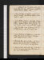Aug. 3. Su.Leland, p. 129. For Carlow: call on Ponsonby, Joinville: dine at Brown's, w. Griffiths's, Tobins, Hume & Latten: sleepe.[Not in London]
4. M.Naas, Kilcullen & Ballytore: meet Frizel: dine at Timolin: tea Burne's, Carlow, w. Ward, Hall, &c: sleep.[Not in London]
5. Tu.Toler, Waddy, Duquerry, Mahaffy, Johnson, Arthur Moore, Ridgway, Colles, Colman, Mills & Darcy: Wallace's triale: hear Barringtone: int. Kelly: Eustace, Ball & Barrington dine; adv. Whaley.[Not in London]
6. W.Meet McNally: hear Duquerry & Currane: //Whaley dines: sleep at Hacket's Town.[Not in London]
7. Th.Clashe: breakfast at Rathdrum: 7 churches, Camp, dine, w. Hornes, Thomson & Hopkins: supper, major Andrews: sleep.e[Not in London]
8. F.St Cavan's bed: call on Grattan; adv. Birminghams: dine at Burne's, w. C, Whaley, mrs Needham & miss Lawless's; adv. miss Kaine.[Not in London]
9. Sa.Leland, p. 182. Call on E B: dine at la. Moira's, w. la. Granard, miss Hamilton & mrs Eagle: meet Mountcashel's.[Not in London]
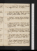Aug. 10. Su.F Queen, C. XI: Davis, apud Leland, pp. 18. Rathfarnham, dine : tea Batley's.[Not in London]
11. M.Burns, çala. Talk of Swift & criminal jurisprudence : meet Davis: Batley calls: Sweeney dines: parting, Dublin, 12 o'clocke.[Not in London]
12. Tu.Packet, 4 morning, w. Gen. Lake, Dean Bourke, Limeric merchant, Garret & S Marshal.[Not in London]
13. W.Holyhead, 4 morning: mail-coach, w. S. Marshal, Longford's negre & parson, v. Virgo: breakfast Gwendu: dine Conway: walk to Llanrwst: sleep. adv. Cotman[Not in London]
14. Th.Breakfast at Edwards's: dine at Kernioga; adv. Hutchinson & sir Richard: chaise to Corwen (Glen Bridge): sleep, letters to M & Curran.[Not in London]
15. F.Hymn to Love. Llangollen, entire day: call on la. E Butlern: intruders, Liverpool traders & Snowdon : evening walk to Valle Crucis Abbey.[Not in London]
16. Sa.Hymn to Beauty. Breakfast at Chirk: Aqueduct & Castle: Post-coach, w. Kyan, Bates & Cumbers//: dine at Oswestry: sleep at Shrewbury.[Not in London]
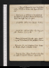Aug. 17. Su.Dine at Darwin's, w. mrs & miss Wedgwoods, O'Reilly & Wilson; adv. Bages & L Fingal.[Not in London]
18. M.Mail-coach, w. Williams & mrs Hatchard: breakfast at Shiffnal: // dine at Birmingham; adv. Iliff: sup at Oxford.[Not in London]
19. Tu.Arnot's Ms. Call on mrs Edwards: M dines.
20. W.Arnot's Ms: Abbé de l'Epée. Tho. Wedgwood calls: M dines: ride w. T W.
21. Th.Mems & Accounts. Jo G calls: call on Reyndsn: sup at Nicholson's, w. Lewis, distiller. M dines.
22. F.Memoires Sec. sur la Russie, p. 144. M dines: theatre, What a Blunder! & Obie.
23. Sa.Heavenly Love: Mems Secretes, p. 184. S Cuxson calls & Fenwick: T W dines: sup at S E's.
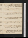Aug. 24. Su.Faithful Shepherdess, acts 1, 2, 3: Coxe's Walpole, p. 51-80. Malone's Dryden, p. 549, fin. Lambs dine; adv. M: invités: Fenws.
25. M.Coxe, p. 230. M dines: sup at Cuxson's, w. mrs Rutton.
26. Tu.Coxe, p. 291. Write to Ht. Northcote dines; adv. M & Fenwicks: invité T W.
27. W.Write to M Robinson & Mountcashel, & G Rn. Dine at Lamb's, w. Manning & M.
28. Th.Antonio. Bolingbroke, Vol. III, p. 309-360: Coxe, p. 352. Theatre, Point of Honoure: M sups.
29. F.Antonio, 19 lines. Mad Lover, acts 1, 2, 3: Coxe, p. 384. Curran, Taggart, A Walker, Ht & Phebe G call: S E dines; adv. Egerton.
30. Sa.Antonio, 16 lines. S Cuxson calls: M dines. Mad Lover, acts 4 & 5: Coxe, p. 481. Meet ES E & Egerton: call on Reynolds n.
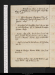Aug. 31. Su.Wimbledon stage, w. Beverley, &c: dine at H Tooke's, w. Harvey fils: sleepe. Reynolds calls n.
Sep. 1. M.Etymologicum Magnum. Dine at mrs Robinson's (Englefield Green), w. M: mtGawler: sleepe.
2. Tu. Breakfast at Hampton Court. Curran dines; read Antonio; H G & Fenwicks to supper: Curran sleeps.
3. W.Curran, Reynolds, Nicholson, Lamb & M dine; invités Fuseli, Lawrence, Porson, Perry, Kemble & Boaden: Curran sleeps. meet R Philips.
4. Th.Write to Arnot & M Robinson. S E & J G dine; adv. M.
5. F.Write to Coleridge. Woman-Hater: Coxe, p. 518. M at tea.
6. Sa.Antonio, 6 lines. Coxe, p. 618. M dines; adv. major White: sup at Keir's, w. M.
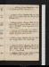Sep. 7. Su.Antonio, 4 lines. Muiopotmos: Alziare: Bonduca, acts 1 & 2: Coxe, p. 743.
8. M.Antonio, 15 lines. Claudian, Stilic. II: F Queen, C. XII: Chaucer, Squire's Tale: Coxe, p. 764, fin. Bonduca, act 3.
9. Tu.Antonio, 20 lines. Claudian, Stilic. III: Bonduca, acts 4 & 5. Curran & M dine: call on Reynoldsn & Northcoten: sup at Taggart's, w. Curran, Dobbs & Stewart.
10. W.Claudian, de Bello Getico, 318: Faithful Shepherdess, acts 4 & 5: Loyal Subject, act 1 & 2. A Walker & Jo G call: call on Fenwickn.
11. Th.Antonio, 5 pages. Claudian, B. G., 647. M dines: meet Jas Moore & mrs: Lamb sups.
12. F.Antonio, 10 lines. Claudian, Hon. VI, 201. Call on Robinsonn (adv. Heath) & Ritson: meet Mcquin: theatre, Wags of Windsore. F Queen, B. III, C. I. Fenwick calls.
13. Sa.ClaudianAntonio, 1 page. Claudian, VI Hon, 330. Robinson calls: M dines; adv. S E.
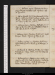Sep. 14. Su.Antonio, revise. Claudian, VI Honor. 660. S Cuxson & Ruttons call: H G dines: sup at Reynolds's.
15. M.Call on Kemble, D L T, (adv. J Bannister) & Northcote: Astley's, w. M & F, 1/2 price, Gretna & the Piratee. meet Reynolds. Loyal Subject, acts 3, 4 & 5: Maid of the Inn, acts 1 & 2.
16. Tu.Antonio, revise. Claudian, Bell. Get., 253: F Maid of the Inn, acts 3, 4, 5. A Walker & R Taylor call: sup at Lamb's, w. Le Grice.
17. W.Antonio, revise. Claudian, B. Get., 437: Cupid's Revenge. M sups. Defence of Poesy, p. 42.
18. Th.Antonio, act V, p. 1, 2. Claudian, B. Get., 647: Island Princess, act 1. Theatre, 3/10 Cl. Marriage, & 1/4 Prizee.
19. F.Antonio, p. 4/2. Claudian, VI Hon., 330: Island Princess, fin: Fairy Queen, C. II. Tea Fenwick's, w. F & M.
20. Sa.Antonio, p. 3, 4/2. Claudian, 660: Custom of ye Country, acts 1 & 2. Write to Coleridge. Call on Carlislen : meet Henley, Smith lp & Jennings Id: theatre, Haunted Towere: M sups.
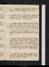Sep. 21. Su.Antonio, 2 pages, & revise. Claudian, M dines: sup at Nicholson's. meet Lewis C G.
22. M.Antonio, 1 page. Claudian, Ser.: Custom of the Country, acts 3, 4, 5. Tuthil dines: theatre, 3/10 Lover's Vowse: M sups. F Queen, C. III.
23. Tu.Antonio, 1 page. Claudian, Ep. I, II: Prophetess, acts 1 & 2: Meet Lewis: Curran dines: theatre, w. him, Richd III, act 3; adv. mrs Plunket & Boadene: call on Reynoldsn: sup w. C & B, Marlb. Strt. S King calls.
24. W.Antonio, 10 lines. Prophetess, acts 3, 4; 5. Reynolds & Noble call: sup at Fenwick's. Castle of Lioni.
25. Th.Antonio, p. 71. Claudian, Ep. III, IV, V; Idyll. I: Honest Man's Fortune, acts 1 & 2: Tea mrs Plunket's, w. 3 Nugents, la. Brown, 2 Jennings's, Ogilvie, O Reily, Kilkenny, ma. Fitzgd, Taygart, C & Moody. Curran sleeps .
26. F.F Queen, C. IV: Honest Man's Fortune, acts, 3, 4, 5: Lover's Progress, acts 1 & 2. Write to S King.
27. Sa.Antonio, 21 lines. Claudian, Idyll. 2, 3: F Queen, C. V: Lover's Progress, acts 3, 4, 5: Beggar's Bush. Sup at Lamb's.
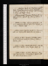Sep. 28. Su.Claudian, Idyll. 4, 5. Meet Jennings, Dobbs & O'Reily: Wimbledon coach, w. Curran & Creaser: call on Tegart & H Tooke; adv. Bonney: dine at Perry's, w. Curran; adv. Duff: C sleeps.
29. M.Antonio, invent. Monsieur Thomas, acts 1 & 2. Call on Ritson: sup at Reynolds's, w. Curran & Boaden.
30. Tu.Antonio, 20 lines. Samson Agonistes, acts 1 & 2: Monsieur Thomas, acts 3, 4, 5. Theatre, J S, 1 scenee. A Walker calls.
3Oct. 1. W.Antonio, revise. Claudian, Idyll. 6, 7: Samson A., acts 3 & 4: Maid in the Mill, acts 1 & 2. M dines.
2. Th.Antonio, 12 lines. Claudian, Ep. Pallad. Call on Curran & Fenwick: meet Jno. Jennings & Burne. Samson, act 5.
3. F.Antonio, 12 lines. Write to Ht. Maid in the Mill, acts 3, 4, 5: Donne, Sat. 2: Fairfax, stanz. 16.
4. Sa.Antonio, revise. Claudian, Proserp. I: Paradise Regained, B. I. Curran dines; adv. S E: sup at Fenwick's, w. Curran & S E.
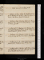Oct. 5. Su.Hugh Trevor, p: 130. Sup at S E's.
6. M.Antonio, 10 lines. Write to C Smith. H Trevor, p. 250; Vol. II, p. 54. Theatre, 1/3 Beggar's Opera, & Indian; adv. Curran, Tegart & E Fenwicke.
7. Tu.Antonio, 5 lines. Claudian, Lib. II, 200: Paradise Regained, B. II: H Trevor, p. 208; Vol. III, p. 50. Call on Denew. Jo G calls.
8. W.Antonio, p. 73/2. Claudian, 372: H Trevor, p. 114. Meet Goold, Dogherty, Burne, Heath & Reynolds's: sup at Lamb's, w. Gulchs & Dollan.
9. Th.Antonio, p. 76/2. Claudian, Lib. III, 384: H Trevor, p. 210. Sup at S E's, w. mrs Pearce. meet Doght.
10. F.Antonio, p. 79, fin. Write to Ht. Paradise Regained, B. III: H Trevor, p. 249; Vol. IV, p. 136.
11. Sa.Antonio, 2 lines. Claudian, 448: H Trevor, p. 180. Write to Coleridge: meet Goold & Dogherty: call on Cn, & mrs Plunket. Lamb & S E sup.
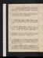Oct. 12. Su.Claudian, Proserp., Lib. I: H Trevor, p. 214; Vol. V, p. 70. Carlisles call; adv. E Fenwick: Fenwicks dine: call on S E; adv. Hawkes. Ruggiero, p. 8.
13. M.Claudian, Lib. II: Ruggiero, p. 14: H Trevor, p. 216. E Fenwick dines; adv. Jas Barry.
14. Tu.Write to Ht. Claudian, Lib. III: H Trevor, Vol. VI: Paradise Regd, B. IV. Dine at S E's, w. F & M. A Willis calls.
15. W.Warton's History, Diss. I: Claudian, Giga & Epig. 1-12. Read to Fenwick's: dine at Carlisle's, w. them & Batty; adv. Nicholson. Tobin calls.
16. Th.Antonio, 23 lines. Warton, 1/2 Diss. II. Meet (Shd) King & W Stewart: H G, Hansard & Forsyth at tea.
17. F.Antonio, p. 19-24. Claudian, Ep. 30. (Meet Shd.) Curran & Wolcot dine; adv. S E; invités Gawler, Fordyce, Reynolds, Robinson, Clementi, Carlisle & Macquin. Keir calls. C sleeps.
18. Sa.Warton, 1/2 Diss. II. Call w. C, on Reynolds, Fuseli & Lawrence; Westm. Abbey; meet Goold & Ritson: dine at Perry's, w. C, Porson, H Tooke, Raine, Adair & Lamb.
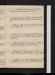Oct. 19. Su.Warton, p. 168: Chaucer, çala. S Cuxson calls: Curran & Porson dine; sleepe.
20. M.Claudian, Epig. 44: F Queen, C. VI. Dine at Wolcot's, w. Curran: theatre, Selima & Azore. St Ives, p. 111.
21. Tu.F. Queen, C. VII: Chaucer, Grisildis. M dines: call on Fenwicks.
22. W.Antonio, p. 24. Ruggiero, p. 26. Nicholson calls: call on Curran: theatre, Duenna; adv. M & Renouarde.
23. Th.Antonio, 1 page. Ruggiero, p. 33: Warton, p. 388. Call on Reynoldsn: sup at Cuxson's.
24. F.Antonio, p. 26/2. Ruggiero, p. 38: Chaucer, çala: Warton, p. 468. Theatre, 1/5 Suspic. Husbde.
25. Sa.Antonio, p. 27; revise. Ruggiero, p. 52: Warton, Vol. II, p. 407-463. Cuxsons call: S E sups.
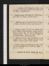Oct. 26. Su.Antonio, revise. Ruggiero, p. 58, fin: Chaucer; W of B's Tale. Call on Kemble: dine at Curran's, w. mrs Dixon: A Walkers calls n.
27. M.Antonio, revise. Temistocle, p. 7. Tobin & Currncall: A Walker & M dine: sup at Lamb's.
28. Tu.Antonio, revise. Temistocle, p. 17. Northmore & Welby call: A Walker dines: call on Fenwickn.
29. W.Antonio, 16 lines. St Ives, p. 165. A Walker breakfasts: Stratford, M R[w?]: meet Perry, Curran, Hanger, Caldwel & Jas Wt: dine at Tobin's, w. Leslie; adv. Underwood & Dyson: theatre, 1/5 Revenge, & Actæone: H G & Axtel at tea n. Write to Kemble.
30. Th.Antonio, 10 lines; revise. Temistocle, p. 29. MtHubbard: call on Ritson: theatre, Virginia; adv. (P. William & d. of Norfolk) & Agare: M sups.
31. F.Antonio, revise. Temistocle, p. 42. Call on Kemble: dine at Northmore's, w. Cholmley, Welby & Gordons: M sups.
Nov. 1. Sa.AWrite to Kemble. Theatre, Lifee: M sups.
Nov. 2. Su.Temistocle, p. 59. Caldwel, Lambs, Fenwicks & M dine.
3. M.Temistocle, p. 70, fin: Warton, Vol. II, p. 71. Jas Wt dines: meet Lewis.
4. Tu.Antonio, revise. Warton, p. 124. Theatre, Brothers; adv. Davise: M sups. Lamb calls.
5. W.Write to Sheridan. Warton, p. 175. M dines; adv. S E.
6. Th.Antonio, revise. Warton, p. 256. Jas Wt & M dine.
7. F.Write to Kemble. Warton, p. 463. Theatre, 1/10 Life, & Oscar; adv. S E, Kedden, C Kemble & Macmilne.
8. Sa.Antonio, revise. S E at tea: sup at Ms.
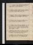Nov. 9. Su.Antonio, revise. Write to Kemble. Jas Wt calls: M dines: sup at Reynolds's.
10. M.Antonio, 1 1/2 pages. Maid's Tragedy: Sol. Wanderer, p. 156. S Cuxson calls: call on S E.
11. Tu.Antonio, 1 1/2 pages. Wife for a Month, acts 1, 2, 3/2. Sol. Wanderer, p. 306. M dines. Write to Ht.
12. W.Antonio, 1 page. Wife for a Month, acts 3/4, 4. Call on Fenwick: dine at S Elwes's, w. M.
13. Th.Antonio, 10 lines. Wife for a Month, act 5: Sol. Wanderer, Vol. II, p. 102. Jas Wt breakfasts: call on Fenwick & Johnson: theatre, 2/5 Shylock, & Love à la Mode; adv. Estee. Escapes.
14. F.Antonio, 12 lines. Thierry, acts 1, 2, 3, 4/2. Write to Ht. Jas Wt dines; adv. Jo G: sup at Nicholson's, w. Sullivan, miss Scott & miss Sherwood.
15. Sa.Antonio, revise. Call on Fenwick & Kemble: M, S E & Jno Toke dine; M & Stoddart sup.
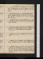Nov. 16. Su.Breakfast at Tobin's: Tobins (read), Stoddart & Ballantyne junrcall: M dines: sup at Lamb's, w. Stoddart, Fenwicks & Gulch: meet majr White.
17. M.Sol. Wanderer, p. 200. M & Jas Wt breakfast: call on Foulkes n, Ritson, Northcote n & E F: Tobin calls: theatre, 3/10 Richard; adv. Fenwick & Dogherty{.}eWrite to Curran.
18. Tu.Write to Coleridge & C Smith. Thierry, acts 4/2, 5: Philaster, act 1: Sol. Wanderer, p. 317. A Walker calls: S E at tea.
19. W.Antonio, revise. Achille, p. 23: Sol. Wanderer, Vol. III, p. 74. M dines; adv. S Cuxson: theatre, Il Bondocanie. meet Pinkerton & Barbauld.
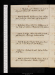20. Th.Antonio, 1 1/2 pages. Achille; p. 30. Call on Fenwick.
21. F.Antonio, revise. Achille, p. 44: Massacre of Paris: Sol. Wanderer, p. 214. Tobin & A Walker call.
22. Sa.Antonio, revise. Achille, p. 59: Philaster, acts 2, 3, 4: Sol. Wanderer, p. 240. W C Brown calls: dine at Carlisle's, w. T W, Smiths (Stockwell), Pearson, Courayer, Bloxam, White & mrs Knowles{.} Carlisle senr.
Nov. 23. Su.Philaster, act 5: Heptameron, p. 21. T Wedgwood & Jno G call: M dines; adv. Keir.
24. M.Write to Kemble. Heptameron, p. 82: Sol. Wanderer, p. 380, fin. Tobin calls: call on Reynoldsn.
25. Tu.Wild-Goose Chace, acts 1 & 2: Heptameron, p. 116. Dine at Tobin's, w. T Wedgwood, Leslie & White.
26. W.Achille, p. 68, fin. Call on Reynolds & Northcote; adv. Bourgeois: H G & miss Hansard at tea.
27. Th.Write to Kemble. Tito, p. 6: Wild-Goose Chace, acts 3, 4, 5. Sup at Lamb's; adv. Rickman.
28. F.Tito, p. 14: Richard II, act 1. Call on Ritson: S E at tea.
29. Sa.Write to Arnot & C Smith. Hume, Rich. II, pp. 51. M & C Keir dine: theatre, 1/5 K Johne.
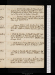Nov. 30. Su.Write to Tho. Cooper & C Mountcashel. Richd II, act 2: Martial Maid, acts 1, 2, 3. Dine at T Wedgwood's, w. Carlisle, Leslie, Brasier & Tobins: sup at Reynolds's, w. Morton & C Kemble.
Dec. 1. M.Martial Maid, acts 4 & 5: Warton, Vol. III, p. 56. Meet T Knight: sup at S Elwes's, w. Johnston's, miss Mitchel & M.
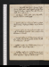2. Tu.Chaucer, Miller's Tale: Warton, p. 86. Tobin calls: dine at Johnson's, w. Fuseli, Malthus, Bonnycastle, Chalmers, Wells & Newnum; adv. Mawman.
3. W.Write to Coleridge & C Smith. Knight's Tale, p. 34: Malthus on Provisions, pp. 28. M dines: sup at Rickman's, w. Lamb & Dyer. A Walker calls, & major White. Battle of Hohenlindene
4. Th.Write to Lamb. Knight's Tale, p. 44: Warton, p. 160: Heptameron, p. 146: Sea Voyage, act 1.
5. F.Burke on Scarcity, pp. 48: Heptameron, p. 166. Call on Kemble: M dines: theatre, 1/5 Macbethe.
6. Sa.Lyrical Tales, p. 100. Call on Reynolds & Wedgwood; adv. Carlisle; Tobinn & Ritson: S E at tea: theatre, w. M & F, Paul & Virginiae.
Dec. 7. Su.Knight's Tale, p. 52: Lyrical Tales, p. 150. Tobin calls: meet Gawler & Malthus: Lamb & M dine: call on Keir; adv. Macdonald: Keir sups, w. &c .
8. M.Sea-Voyage. Tobin calls: call on Reynolds, Wolcot & Hoaren: meet Watts.
9. Tu.Gowrie, acts 1, 2, 3: Coxcomb, act 1 & 2. Meet Sturt, Tierney, Dogherty & Whites: sup at Nicholson's.
10. W.Gowrie, acts 4 & 5: Coxcomb, act 3. Tobin calls: call on Northmore & Carlisle: dine at M's, w. Fells, Renouard & L Knapp.
11. Th.Coxcomb, acts 4 & 5. Dr Macleane calls & Tobin: call on Lamb: Wedgwood, Carlisle, Malthus & Fell dine: S E sups.
12. F.Captain, acts 1 & 2: Heptameron, p. 197. A Walker calls: sup at Reynolds's.
13. Sa.Captain, acts 3, 4, 5: Heptameron, p. 227. Call on Tobin: M dines: theatre, w. M, Antonioe: meet Reynolds: sup at Lamb's, w. M.
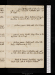Dec. 14. Su.Lamb, & Reynolds, & Maclean call: call on Tobin: Fenwick & A Walker dine: sup at Fell's.
15. M.Antonio, revise. Call on Robinson & R Taylor: Maclean & Fenwick dine: sup at Lamb's.
16. Tu.Antonio, revise. Tobin calls: M & S E dine.
17. W.Antonio, revise. Theatre, Every Man in his Humoure: M & S E sup.
18. Th.Antonio, revise. Suppliants : Who's the Dupe: Heptameron, p. 267.
19. F.Write to Ht. L Jones & A Walker call: call on Fell: C Keir dines; adv. Keir: sup at Lamb's.
20. Sa.Stoops to Conquer: Yorkshire Tragedy. Meet Fell: call on R Taylor & Lamb.
Dec. 21. Su.Call on Reynoldsn & Perry: Lambs, Fells, M & Renouard dine
22. M.Write to C Smith. Puritan. Theatre, 1/5 Jane Shore & Harlequin's Tour; adv. Morton, M & Renouarde. Publication, Antonio
23. Tu.Lord Cromwel: 1/2 Sir J Oldcastle. A Walker calls: dine at Fell's, w. Lamb, M & Renouard.
24. W.Invent Mirza. A Walker calls: call on Fell & Reynoldsn.
25. Th.Harris & Herbert, çala. Lamb calls: dine chez lui, w. Rickman & Dyer.
26. F.Chardin, p. 102. Call on Taylor & Robinson: S E at tea. M Robinson dies
27. Sa.Write to Wedgwood. Chardin, p. 142. Meet Barbauld: theatre, Harlequin Amulete. Jno G calls.
Dec. 28. Su.Olearius, Chardin, &c. Wedgwood & Jo G call: dine at M's, w. Fells, Lambs & Renouard.
29. M.Character of M Rn. Chardin, çala. M sups.
30. Tu.Gibbon, çala. Call on M; adv. Hills & Renouard: Exeter mail, w. M; sup at Englefield Green.[Not in London]
31. W.Countess of Castle-Howel, p. 100. Funeral at Old Windsor; adv. Warrington, Kimberley & miss Halle: call on Gawlern. Fells call n.[Not in London]
Contact --  -- Cookies/Privacy
-- Cookies/Privacy